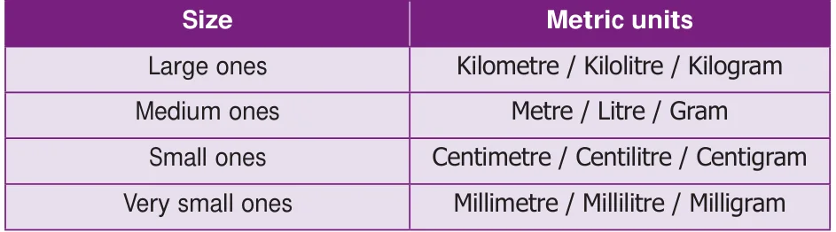
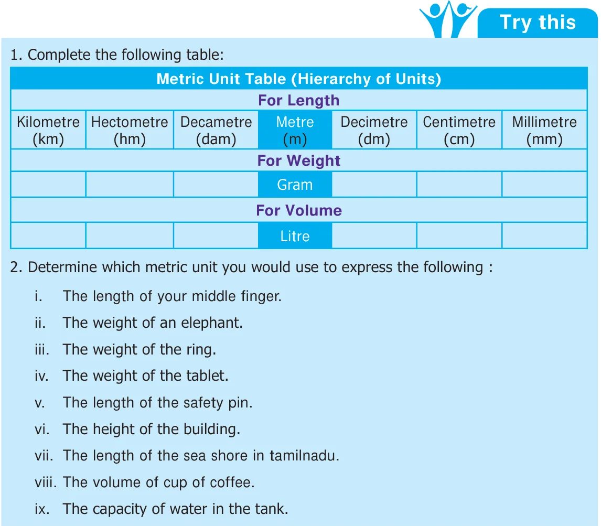

Recap
Universally accepted basic metric units are
- Length in metre.
- Weight in gram.
- Capacity (volume) in litre.
We use different metric units for different sizes in various situations


Recap
Universally accepted basic metric units are
We use different metric units for different sizes in various situations

